ESH · Chapitre 1 · Cours reçu en prépa
Les acteurs et les grandes fonctions de l’économie
Cours intégral · Des acteurs économiques aux échanges extérieurs.
Le texte du support est repris intégralement, avec ses tableaux, graphiques, exemples, données et références. Les encadrés « Précision pour réviser » signalent les coquilles et les distinctions à retenir ; le PDF et les pages originales restent consultables à tout moment.
Les statistiques gardent leur année, leur champ et la date de publication du document. Certains graphiques utilisent une version antérieure des comptes : ne pas mélanger leurs chiffres avec une série révisée.
Ce cours rédigé complète le diaporama de la partie 1 déjà publié et poursuit le chapitre jusqu’aux échanges extérieurs.
Sommaire du chapitre
Introduction · Acteurs, fonctions et comptabilité nationale
Support · page 1 sur 35 · Voir la page originale
Texte et documents du support
Module 1 : Les fondements de l’économie et de la sociologie
Thème 1 : Les fondements de l’économie
Chapitre 1 Les acteurs et les grandes fonctions de l’économie
Introduction
☞ Pour analyser l’activité économique, résultat de multiples décisions prises par des milliers d’individus, il est nécessaire de disposer d’un cadre précis. L’INSEE regroupe les différents acteurs de la vie économique dans « des ensembles considérés comme pertinents », « ayant des comportements similaires » et « caractérisés par leurs fonctions principales et la nature de leur activité ». Dans ce chapitre, nous allons ainsi étudier les acteurs économiques suivants : les entreprises, les ménages, l’État mais également les sociétés financières et « l’extérieur ».
☞ Les acteurs se caractérisent par leur fonction : par exemple la production pour les entreprises, la consommation pour les ménages, etc. Ces grandes fonctions économiques – la production, la répartition des revenus, la consommation, l’épargne et l’investissement – constituent le cœur de l’étude de l’économie politique. Cet objet est spécifique car les phénomènes qui le constituent sont interdépendants et soumis au changement. Il l’est également dans la mesure où il ne peut être analysé indépendamment de valeurs et de normes historiquement données. Plusieurs approches théoriques sont possibles : classique, néoclassique, keynésienne, etc.
☞ Les grandes fonctions de l’économie sont les opérations qui permettent in fine de satisfaire les besoins humains. Nous retiendrons principalement les fonctions suivantes : la production et l’investissement, la consommation et l’épargne, la répartition, les échanges extérieurs (importations et exportations). Les deux premières fonctions (production et consommation) sont à la source de l’échange. La troisième fonction, la répartition, garantit quant à elle les équilibres. Évidemment, le résultat de toutes les décisions prises par les acteurs détermine le plus ou moins grand dynamisme de l’économie.
☞ Pour décrire les interdépendances entre les agents économiques, il faut adopter un système de représentation. C’est l’objet de la Comptabilité Nationale (CN). La CN présente les relations macroéconomiques entre les différents agents d’une économie, afin de quantifier et synthétiser ces relations dans un cadre comptable. La CN est donc une représentation globale, détaillée et chiffrée de l’économie nationale dans un cadre comptable.
✪ La CN est une représentation. On entend souvent dire que la CN est objective, qu’elle est la photographie du réel. Or l’objet de la CN est construit par elle-même.
Section I : Des caractéristiques des principaux acteurs de l’économie aux opérations qui les relient
1. Les entreprises ont pour principale fonction de produire des biens et services marchands
Entreprises · Définition, statuts, organisation et taille
Support · page 2 sur 35 · Voir la page originale
Texte et documents du support
☞ Une entreprise est une unité économique dotée d’une autonomie juridique qui combine des facteurs de production (capital et travail) pour produire des biens ou des services destinés à être vendus sur un marché. Il est habituel d’associer systématiquement l’entreprise avec la maximisation du profit. Mais c’est oublier que beaucoup d’entreprises ne cherchent pas à maximiser leurs profits. C’est le cas de l’économie sociale (mutuelles, coopératives, entreprises d’insertion, etc.) ou encore de certaines entreprises publiques.
La CN distingue parmi les entreprises les entrepreneurs individuels, les sociétés non financières et les sociétés financières.
☞ Ainsi, la fonction principale des entreprises est la production marchande. Les biens produits peuvent être des biens de production, des biens de consommation intermédiaire, incorporés dans de nouveaux produits et des biens de consommation finale. Les services sont destinés à d’autres entreprises ou aux particuliers.
☞ Les entreprises peuvent revêtir des formes juridiques diverses : entreprises individuelles dans lesquelles le propriétaire de l’entreprise est une personne physique, responsable sur ses biens propres des dettes de l’entreprise, sociétés où plusieurs personnes sont propriétaires du capital, SARL (société à responsabilité limitée dans laquelle les associés peu nombreux ne peuvent vendre leurs parts sociales, c.a.d. le montant de leurs apports, qu’avec l’accord des autres associés), mais aussi des entreprises publiques (celles sur lesquelles l’État peut exercer directement ou indirectement une influence dominante du fait de la propriété ou de la participation financière).
☞ Les entreprises peuvent également être classées selon leur structure organisationnelle, comme l’ont mis en évidence les travaux pionniers de A. Chandler. Cet historien américain distingue deux formes d’organisation de la firme, qui se seraient succédé aux EU : l’organisation fonctionnelle centralisée, dénommée forme U et l’organisation multidivisionnelle en centre de profits autonomes, dénommée forme M. Dans le cas de la forme U, l’activité de l’entreprise est structurée par fonctions (la production, la recherche, le marketing, etc.). Dans le cas de la forme M, l’entreprise est décentralisée en divisions autonomes, qui sont spécialisées par lignes de produits ou par régions. Chaque division dispose de sa propre direction et est organisée en centre de profit autonome. Ces différentes divisions sont supervisées par une direction générale, qui assure la coordination de l’ensemble.
☞ Enfin, les entreprises diffèrent selon leur taille, laquelle est mesurée par le chiffre d’affaires, les effectifs salariés et le montant du bilan (tout ce que possède l’entreprise). Dans cette perspective, la loi de modernisation de l’économie de 2008 introduit une nouvelle définition de l’entreprise et de sa catégorie à partir de critères économiques, ce qui conduit à une meilleure vision du tissu productif.
Quatre catégories d’entreprises y sont définies (Voir Rapport de l’INSEE, Les entreprises en France, édition 2019) :
➣ Les PME occupent moins de 250 personnes et ont un chiffre d’affaires annuel n’excédant pas 50 millions d’euros ou un total de bilan n’excédant pas 43 millions d’euros.
➣ Parmi elles, les micro-entreprises (MIC) ont souvent moins de 10 personnes et ont un chiffre d’affaires annuel ou un total de bilan n’excédant pas 2 millions d’euros.
➣ Les ETI (entreprises de taille intermédiaire) sont des entreprises qui n’appartiennent pas à la catégorie des PME et qui d’une part occupent moins de 5000 personnes, d’autre part ont un chiffre d’affaires annuel n’excédant pas 1500 millions d’euros soit un total de bilan n’excédant pas 2000 millions d’euros.
➣ Les grandes entreprises (GE) sont des entreprises de plus de 5000 salariés, ayant un chiffre d’affaires annuel de plus de 1,5 milliard d’euros ou un total de bilan supérieur à 2 milliards d’euros. Celles-ci sont presque toujours organisées en groupes (un groupe est une entité économique formée par un ensemble de sociétés liées entre elles par des participations au capital et contrôlées par une même société).
Entreprises · Critères de taille et concentration productive
Support · page 3 sur 35 · Voir la page originale
Texte et documents du support
☞ Chiffre d’affaires : Volume d’affaires réalisé par une entreprise sur une période donnée.
☞ Total de bilan : Synthèse permettant de chiffrer le patrimoine de l’entreprise à une date donnée, à partir de ce que possède l’entreprise, l’actif (immobilisations) et des ressources dont elle dispose, et le passif (crédits, capital).
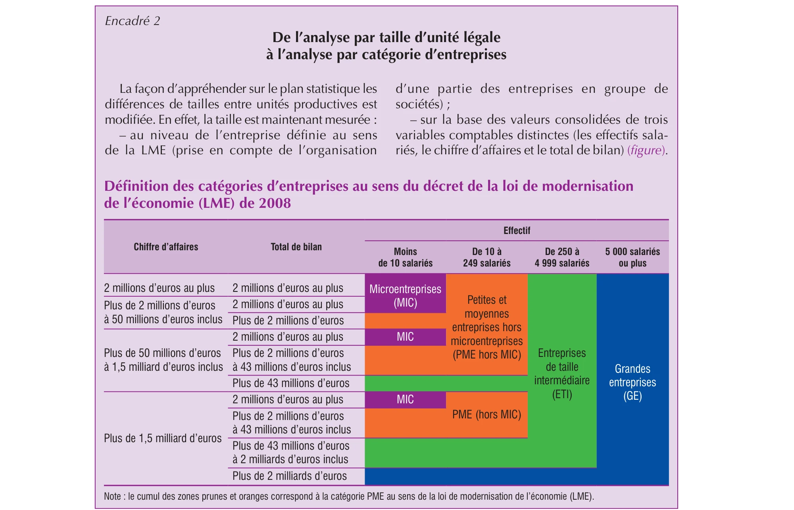
☞ La loi de modernisation de l’économie (LME) de 2008 a introduit une définition de l’entreprise et de sa taille à partir de critères économiques qui conduit à une meilleure vision du tissu productif. Approchée par la notion de groupes, cette définition est, depuis 2013, affinée par un travail de profilage pour les plus grands d’entre eux. Cette définition économique de l’entreprise révèle la forte concentration du tissu productif. En effet, le tissu productif français est très concentré car les micro-entreprises, très nombreuses, ont au final un poids faible dans l’activité économique.
💡 Pour approfondir :
➣ L’essentiel sur les entreprises en France – INSEE 2026 https://www.insee.fr/fr/statistiques/5424748?sommaire=7667330
☞ Selon l’INSEE, en 2023 en France, les secteurs marchands non agricoles et non financiers (incluant toutefois les exploitations forestières, les auxiliaires de services financiers et d’assurance et les holdings) comptent 5,2 millions d’entreprises. Ces entreprises emploient 15,9 millions de salariés en équivalents temps plein (EQTP). En 2023, les 5,2 millions d’entreprises des secteurs marchands non agricoles et non financiers réalisent 1473 milliards de valeur ajoutée. Le tissu productif est très concentré : les 333 grandes entreprises et les 7442 entreprises de taille intermédiaire génèrent 58% de la valeur ajoutée. À l’opposé, les 5 millions de microentreprises génèrent 19% de la valeur ajoutée. Entre ces deux extrêmes, les PME hors microentreprises génèrent 23% de la valeur ajoutée. Les très grandes entreprises emploient 28% des salariés, les entreprises de taille intermédiaire 26%, les PME hors microentreprises 29% et les
Entreprises · Destruction créatrice, mondialisation et poids économique
Support · page 4 sur 35 · Voir la page originale
Texte et documents du support
microentreprises 17%.
✪ Phénomène de destruction créatrice (créations et disparitions d’entreprises en dynamique).
✪ Impact de la mondialisation économique et financière et des nouvelles technologies de l’information et de la communication (fragmentation des CVM).
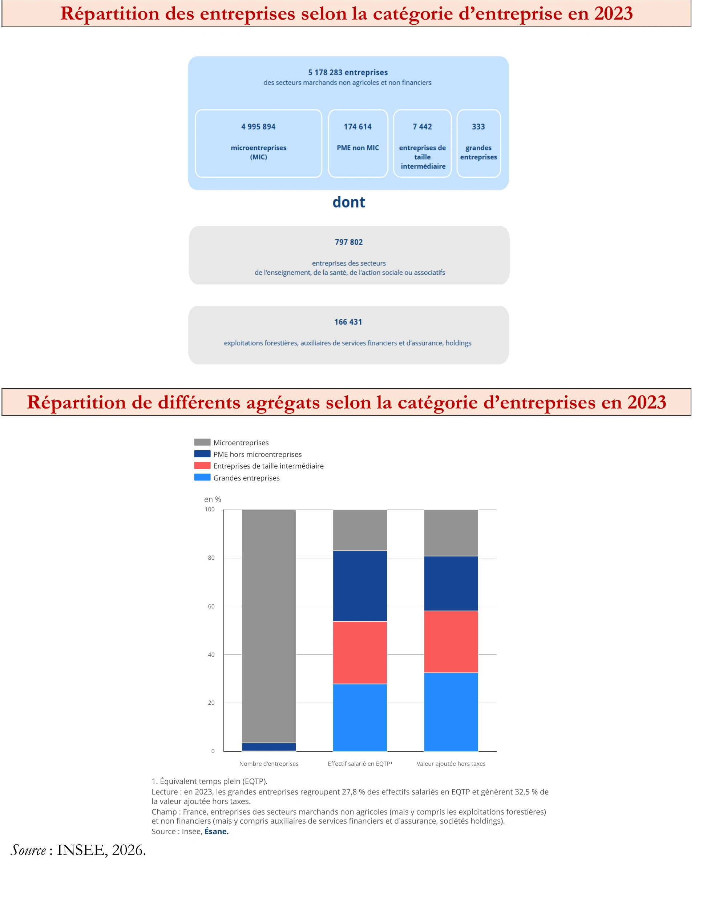
Entreprises · Valeur ajoutée et secteurs d’activité
Support · page 5 sur 35 · Voir la page originale
Texte et documents du support
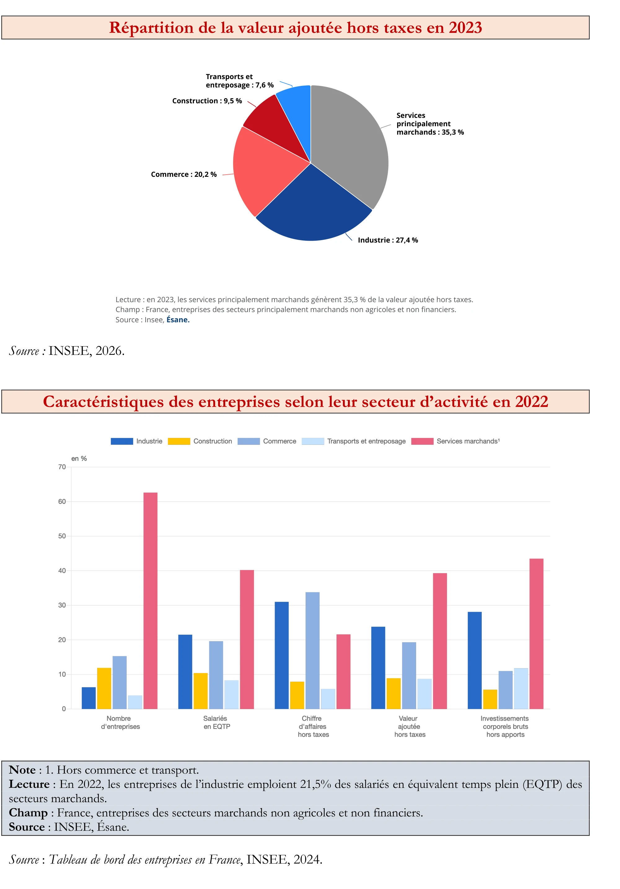
Production, capital et définition des ménages
Support · page 6 sur 35 · Voir la page originale
Texte et documents du support
Les entreprises ont pour principale fonction de produire des biens et des services marchands.
☞ En CN, la production désigne une activité exercée par une unité institutionnelle qui combine des facteurs de production pour créer des biens et des services.
☞ Par convention, on considère qu’une production est marchande lorsqu’elle est vendue à un prix économiquement significatif, c.a.d. couvrant au moins 50% des coûts de production.
Pour réaliser cette activité de production marchande, les entreprises doivent combiner des facteurs de production : du travail et du capital.
Le capital peut être circulant. Il regroupe alors l’ensemble des biens et services utilisés pendant un cycle de production : matières premières, énergie, fournitures, services nécessaires à chaque stade de production. Il peut être aussi fixe et comprendre les moyens de production relativement durables (dépassant la durée du cycle de production) participant directement à la fabrication des biens ou à la réalisation de la prestation de service (exemple : machines-outils, bâtiments, etc.). Quand une entreprise investit, elle réalise une formation brute de capital fixe (FBCF), qui mesure la valeur des actifs fixes des producteurs résidents.
☞ Dans le système européen de comptabilité (SEC95), la FBCF correspond à la valeur des biens durables neufs acquis par les unités de production pour être utilisés pendant au moins un an dans leur processus de production. La FBCF est donc la mesure comptable de l’investissement.
2. Les ménages ont pour fonction principale de consommer et d’épargner
☞ Le ménage est une unité institutionnelle de la CN qui regroupe l’ensemble des occupants d’une résidence principale, qu’ils aient ou non des liens de parenté.
☞ En 2023, l’INSEE indique qu’en France hors Mayotte, on compte 30,9 millions de ménages. Ceux-ci sont de plus en plus petits : ils comportent en moyenne 2,14 personnes, contre 3,1 en 1968, notamment en raison de la baisse de la natalité, du vieillissement de la population, de la solitude accrue et de la plus grande fragilité des unions.
Les ménages sont aussi de plus en plus nombreux. Cette hausse est due pour moitié à la croissance de la population et pour moitié à la réduction de la taille des ménages. Elle est portée essentiellement par les ménages formés d’une seule personne ou d’un couple sans enfant.
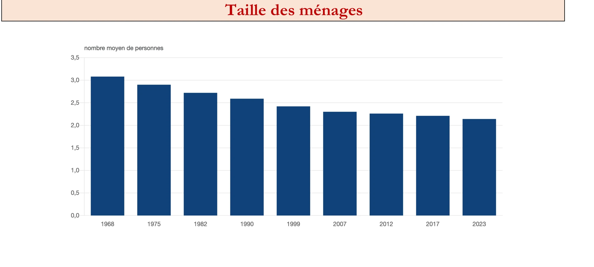
Ménages · Structure familiale, revenus et pouvoir d’achat
Support · page 7 sur 35 · Voir la page originale
Texte et documents du support
Lecture : En 2023, la taille moyenne des ménages est de 2,14 personnes. Champ : France hors Mayotte, population des ménages. Source : INSEE, recensement de la population (RP) 1968 sondage au ¼ - RP1975 sondage au 1/5 – RP1982 sondage au ¼ - RP1990 dépouillement exhaustif – RP1999 à RP2023 exploitations principales.
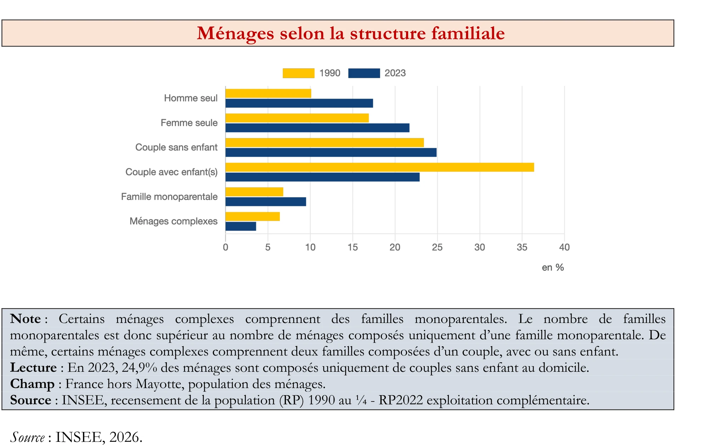
☞ Au sens économique, les ménages regroupent les unités dont la fonction principale est la consommation et dont les ressources principales sont obtenues par la rémunération des facteurs de production (via leur travail ou leur possession du capital productif), et par des transferts de revenus opérés par l’État. Les ménages participent à l’activité productive soit par leur travail, soit en mettant à disposition des entreprises un capital nécessaire à leur fonctionnement, soit en contribuant, à travers différents prélèvements, à la production réalisée par les administrations publiques.
☞ En 2025, selon les données de l’INSEE, le pouvoir d’achat du revenu disponible brut (RDB) des ménages se replie de 0,4% après une hausse de 2,7% en 2024 : le ralentissement du RDB en valeur (+0,5% après + 5%) est atténué par le reflux de l’inflation (+0,8% après +2,2%). Ramené au niveau individuel et en tenant compte de l’évolution de la taille des ménages, le pouvoir d’achat baisse de 0,7% après une hausse de 2,2% en 2024.
💡 Pour approfondir : Les Comptes nationaux, INSEE 2026. https://www.insee.fr/fr/statistiques/8996855?sommaire=8071406
Revenu disponible = Prestations – Prélèvements Revenu disponible = (Revenus primaires + revenus de transfert) – (cotisations sociales +
impôts directs + CSG)
Ménages · Composition du revenu disponible en 2024
Support · page 8 sur 35 · Voir la page originale
Texte et documents du support
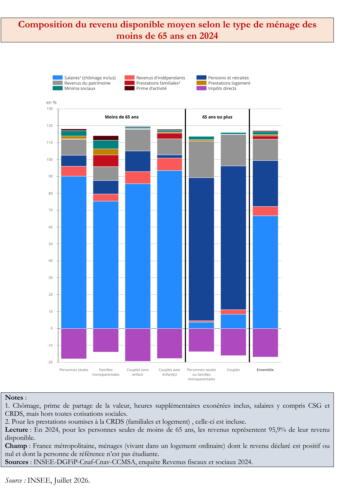
Ménages · Revenu nominal et pouvoir d’achat, 1960–2025
Support · page 9 sur 35 · Voir la page originale
Texte et documents du support
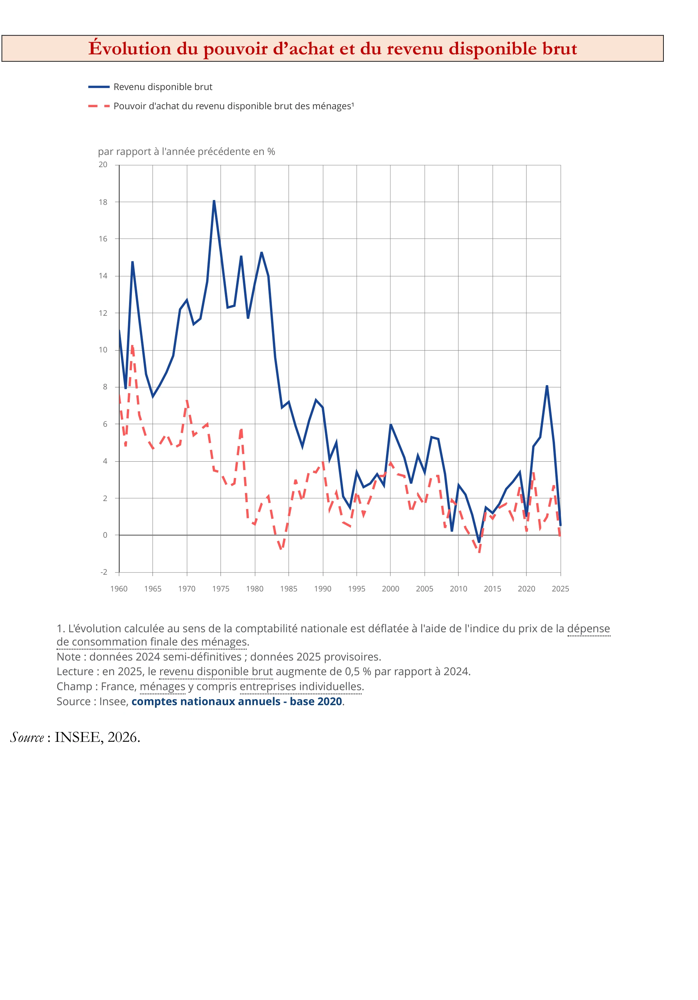
Ménages · Prévisions, consommation et dépenses pré-engagées
Support · page 10 sur 35 · Voir la page originale
Texte et documents du support
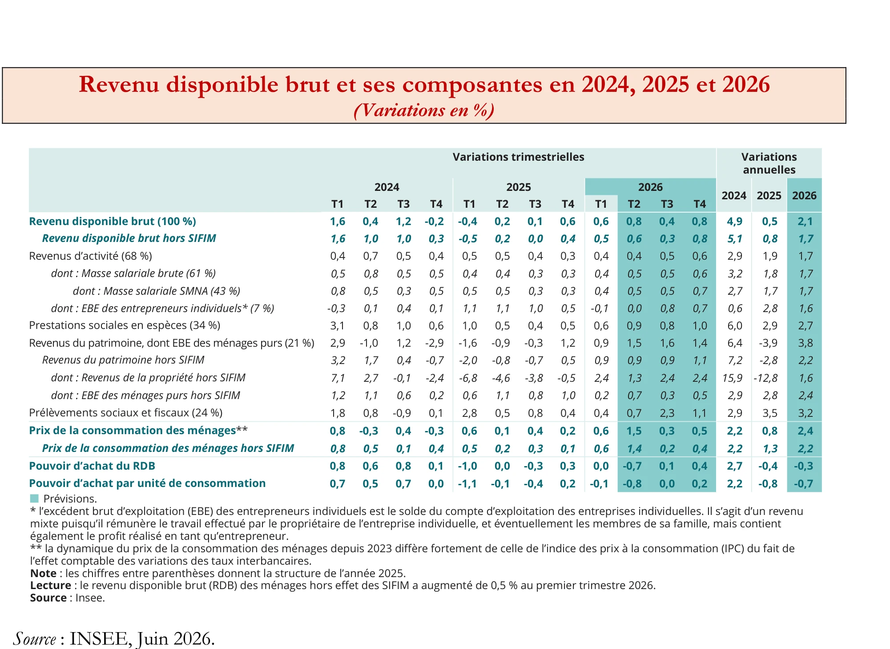
Avec leurs ressources, les ménages peuvent consommer ou épargner. En moyenne, les ménages français consomment 85% de leur revenu disponible et épargnent 15%.
☞ Sur un plan strictement économique, la consommation est l’utilisation d’un bien ou d’un service qui entraîne à plus ou moins long terme sa destruction.
☞ L’INSEE mesure la consommation des ménages par la consommation effective qui comprend les dépenses de consommation (les consommations payées par les ménages) et la consommation individualisable des administrations. En plus de leurs dépenses de consommation, les ménages utilisent, pour satisfaire leurs besoins, des services produits par les administrations. Ces services, non marchands, non vendus sur un marché, sont financés par la collectivité (par les impôts et les cotisations sociales) et fournis gratuitement aux ménages ou à un prix économiquement non significatif (inférieur aux coûts de production). Cette consommation, essentiellement des services de santé et d’éducation, est dite « individualisable » car ses bénéficiaires sont clairement identifiés. Les services non marchands comme la justice ou la police ne sont pas comptabilisés dans la consommation individualisable car ils ne bénéficient pas uniquement aux ménages.
☞ Depuis le début des années 2000, l’INSEE mesure le poids de certaines dépenses contraintes, difficilement compressibles à court terme, appelées « dépenses pré-engagées » (dépenses liées au logement, aux services de télécommunications, aux frais d’assurance, etc.). Alors que ces dépenses ne représentaient que 12,6% du revenu disponible des ménages en 1960, elles atteignent presque 30% en 2018 (poids le plus lourd pour le logement). Ce poids est d’autant plus lourd que le revenu disponible des ménages est faible.
Ménages · Dépense finale et consommation effective
Support · page 11 sur 35 · Voir la page originale
Texte et documents du support
☞ Selon les données de l’INSEE, en 2025, la dépense de consommation finale des ménages ralentit en volume (+0,4%, après +0,8% en 2024), malgré des prix qui augmentent nettement moins que l’année précédente (+0,8% après +0,2%). L’année 2025 est marquée par un ralentissement net des prix de la dépense de consommation (diminution des prix de l’énergie, des carburants, des produits alimentaires, etc.).
☞ Le revenu disponible brut des ménages ne rend pas compte de l’ensemble des ressources dont ils disposent. En effet, au-delà de leurs dépenses de consommation, les ménages disposent également de biens et services dont le coût est pour l’essentiel pris en charge par la collectivité : éducation, santé, aides au logement versées aux locataires, notamment.
☞ Dépense de consommation finale des ménages : Comprend les dépenses effectivement réalisées par les ménages résidents pour acquérir des biens et des services destinés à la satisfaction de leurs besoins.
☞ Consommation finale effective des ménages : Inclut tous les biens et les services consommés par les ménages, qu’ils aient fait l’objet d’une dépense directe des ménages ou été financés par la collectivité (par exemple les dépenses remboursées par la Sécurité Sociale ou l’allocation logement).
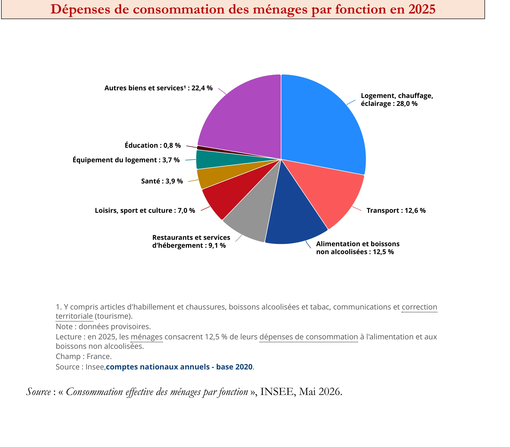
Ménages · Poids des dépenses pré-engagées
Support · page 12 sur 35 · Voir la page originale
Texte et documents du support
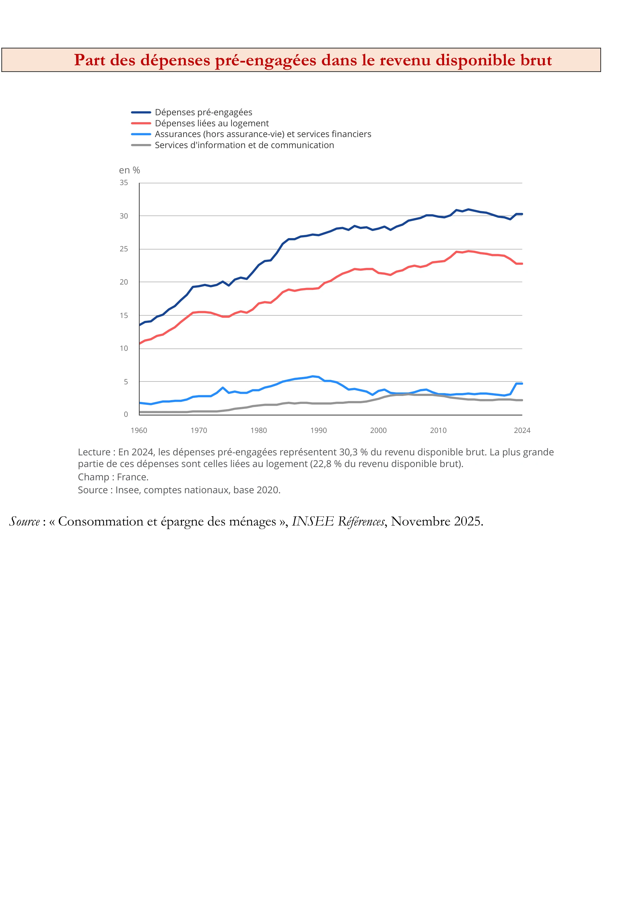
Ménages · Consommation, pouvoir d’achat et épargne
Support · page 13 sur 35 · Voir la page originale
Texte et documents du support
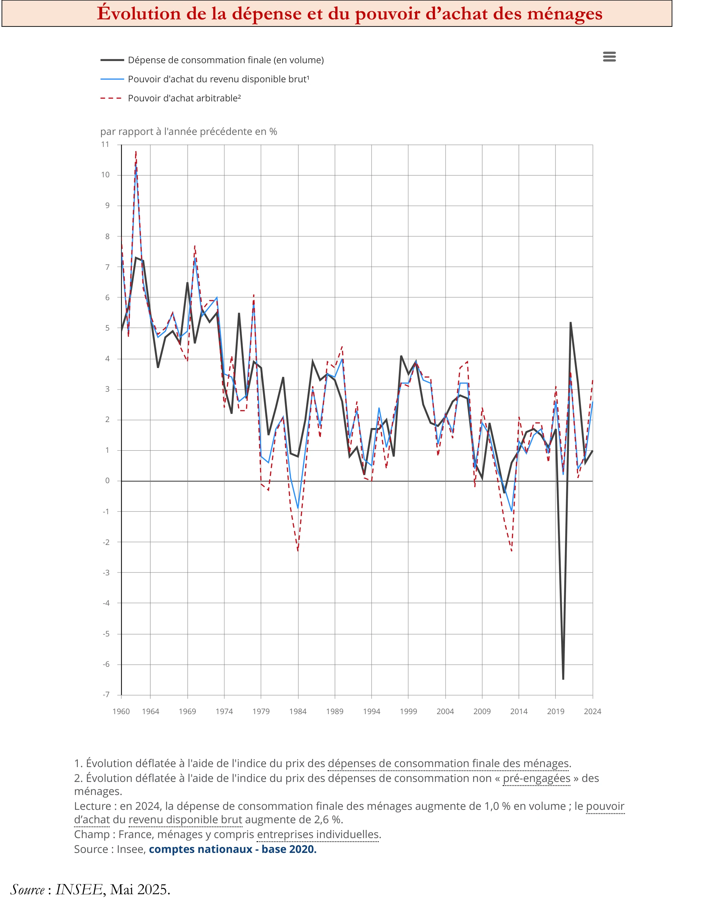
☞ En 2025, le taux d’épargne des ménages est égal à 17,9% du revenu disponible brut.
Épargne · Flux, patrimoine et ratios
Support · page 14 sur 35 · Voir la page originale
Texte et documents du support
☞ L’épargne est généralement définie comme la fraction du revenu qu’un agent ne consomme pas immédiatement.
✪ Attention, il ne faut pas confondre épargne et patrimoine. L’épargne est un flux alors que le patrimoine est un stock. L’épargne est un flux qui permet d’alimenter le stock de patrimoine qui, quant à lui, correspond à l’ensemble des actifs financiers et non financiers détenus par les agents économiques résidents.
☞ Taux d’épargne : Rapport entre le taux d’épargne des ménages et le revenu disponible brut. En France, le taux d’épargne en 2025 est de 17,9% du RDB.
☞ Taux d’épargne financière : Rapport entre la capacité de financement des ménages et le revenu disponible brut. En France, le taux d’épargne financière est de 9,8% du RDB en 2025.
☞ Taux d’investissement en logement : Rapport entre la FBCF des ménages (hors entrepreneurs individuels) et le revenu disponible brut.
☞ Taux investissement : FBCF/PIB (part de la production nationale investie).
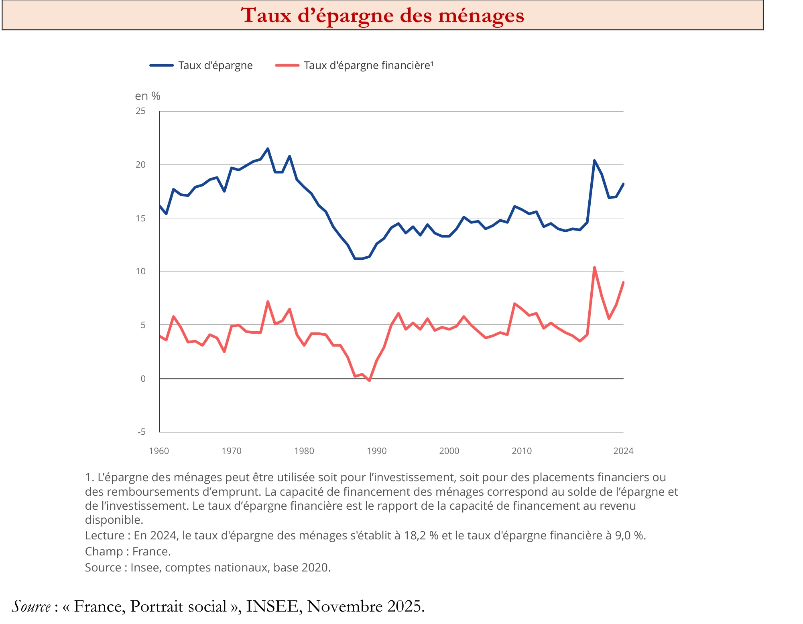
💡 Pour compléter :
➣ Article de Gilbert Cette et Olivier Galland, « Y-a-t-il un problème de pouvoir d’achat en France ? », Telos, Juillet 2024. https://www.telos-eu.com/fr/y-a-t-il-un-probleme-de-pouvoir-dachat-en-france.html
Administrations publiques · Musgrave et fonctions de l’État
Support · page 15 sur 35 · Voir la page originale
Texte et documents du support
3. Les administrations publiques ont des fonctions qui ont évolué au cours du temps
☞ En CN, l’État est représenté par l’ensemble des administrations publiques (APU). On distingue l’État central, les organismes divers d’administration centrale (Ex. : les CNRS), les collectivités locales et les administrations de Sécurité Sociale (Hôpitaux, régimes de sécurité sociale et régimes de retraite complémentaire). Chaque administration possède un budget qui lui est propre.
☞ Les APU produisent des biens ou des services non marchands, c.a.d. fournis gratuitement ou un prix inférieur à 50% du coût de production et elles effectuent des opérations de redistribution.
☞ Jusqu’à l’entre-deux-guerres, les fonctions de l’État sont essentiellement régaliennes (défense, justice, armée). La crise de 1929, le développement de l’État Providence ainsi que l’influence des idées keynésiennes élargissent considérablement le rôle des pouvoirs publics.
☞ R. Musgrave (1959) a proposé une typologie pour définir les principales fonctions de l’État. Cette typologie peut s’appliquer pour comprendre d’une façon générale le rôle des pouvoirs publics.
➣ La fonction d’allocation des ressources : Les pouvoirs publics agissent sur la façon dont les ressources sont affectées aux différents usages économiques possibles. Les pouvoirs publics vont ainsi favoriser la production de certains biens (en subventionnant leur production ou en les produisant eux- mêmes) et au contraire décourager la production d’autres biens (exemple de biens taxés). On dit ainsi que la fonction d’allocation des ressources vise à remédier aux défaillances du marché (externalités, biens publics, etc.).
➣ La fonction de redistribution/répartition : Les pouvoirs publics ont pour fonction de modifier la répartition des revenus. Que ce soit en cherchant à influencer la répartition des revenus primaires ou en intervenant ex post à travers un système de prélèvements et de transferts (politique de redistribution), les pouvoirs publics contribuent à définir la répartition des revenus.
➣ La fonction de régulation de l’activité économique/stabilisation : Les pouvoirs publics ont pour fonction de lisser les fluctuations économiques afin d’offrir un environnement stable. Ils doivent donc relancer l’économie en période de récession et limiter la surchauffe en période de forte croissance.
☞ Les pouvoirs publics disposent de moyens financiers et législatifs pour agir. En effet, les administrations publiques disposent d’un budget composé de recettes et de dépenses. Les prélèvements obligatoires (impôts et cotisations sociales) prélevés sur les agents économiques par les pouvoirs publics financent les dépenses publiques et peuvent contribuer à modifier le comportement des agents économiques. En plus des services marchands non régaliens, les pouvoirs publics financent des infrastructures (routes, voies ferrées, etc.) indispensables au bon fonctionnement de l’économie ainsi que des services comme la santé et l’éducation. Dans ces deux derniers domaines, l’intervention de l’État se justifie par l’existence d’externalités positives et le souci de justice sociale. Dans ces conditions, le budget de l’État voté tous les ans par le Parlement, détermine les recettes et les dépenses de l’État. C’est aussi un instrument au service de la régulation conjoncturelle pour relancer l’activité économique ou lutter contre l’inflation.
Par ailleurs, les pouvoirs publics peuvent aussi agir par la voie législative en réglementant. Exemple : mise en place de nouvelles normes.
☞ Selon l’INSEE, les dépenses publiques sont passées en France de 11,2% du PIB en 1880, à 30% en 1980 et enfin à 57,3% du PIB en 2025. Les recettes publiques s’élèvent quant à elles à 52,2% du PIB. Et enfin les prélèvements obligatoires atteignent 43,6% du PIB en 2025.
Administrations publiques · Dépenses, recettes, dette et déficit
Support · page 16 sur 35 · Voir la page originale
Texte et documents du support
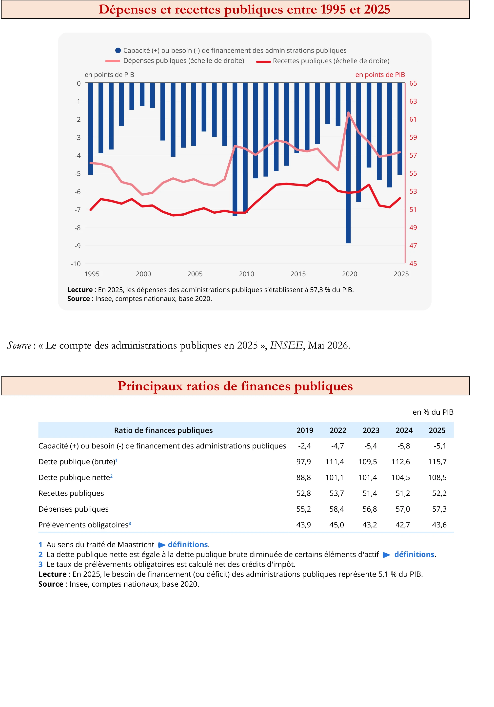
Rosanvallon · Crises de l’État-providence et sociétés financières
Support · page 17 sur 35 · Voir la page originale
Texte et documents du support
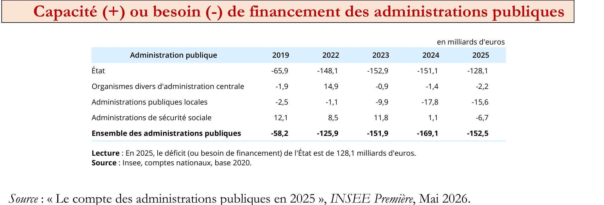
☞ Depuis les années 1980, l’intervention économique et sociale de l’État est remise en cause par une triple crise (P. Rosanvallon) :
➣ Une crise de financement : Le ralentissement de la croissance, la montée du chômage et la crise actuelle pèsent sur les recettes et les dépenses du système de protection sociale. Cf. Déficit budgétaire actuel. En 2025, le déficit budgétaire au sens de Maastricht s’élève à 5,1% du PIB et la dette publique brute (au sens de Maastricht) s’élève en 2025 à 115,7% du PIB. À distinguer de la dette nette des Administrations Publiques (définie comme la différence entre la dette au sens de Maastricht et les actifs exigibles (dépôts, crédits, titres de créance négociables) détenues par les administrations publiques sur des agents privés) : elle s’élève à 108,5% du PIB.
➣ Une crise d’efficacité : Ce ne sont pas seulement les coûts et la mauvaise gestion de l’État Providence qui sont mis en cause, mais aussi son manque d’efficacité. Ainsi, le système de protection sociale n’a pas empêché le maintien, voire la hausse des inégalités alors que son objectif était de lutter contre celles-ci. Ex. : trappe à pauvreté.
➣ Une crise de légitimité : Pour P. Rosanvallon, la crise de légitimité de l’État-Providence proviendrait du fait que la montée en puissance de la protection sociale se serait réalisée en l’absence de mouvements sociaux revendiquant de nouveaux droits, que l’extension de la protection sociale s’est faite à distance des processus démocratiques.
Aujourd’hui, la mondialisation des économies limite l’efficacité des décisions nationales et certaines compétences des États nationaux sont transférées à des entités régionales (exemple de la politique monétaire dans la zone euro).
4. Les sociétés financières développent une activité d’intermédiation financière
☞ La CN identifie des sociétés financières dont l’activité principale est de financer ou de gérer des moyens de financement. Les banques sont des institutions financières de dépôts qui créent de la monnaie par le crédit, mais il existe d’autres institutions financières qui offrent des services d’intermédiation en gérant des moyens de financement.
☞ Les activités de ces institutions financières sont difficiles à mesurer (Cf. Problème d’évaluation des pertes lors de la crise financière). Par ailleurs, le financement externe intermédié (le recours aux banques pour un crédit) a perdu de l’importance avec le développement de l’intermédiation de marché (émissions d’actions et d’obligations).
☞ Par ailleurs, l’activité bancaire s’est internationalisée. Un peu plus de la moitié des effectifs des grands groupes bancaires français travaillent ainsi dans des filiales à l’étranger. Cette internationalisation s’accompagne d’une concentration bancaire, amorcée dans les années 1990. Avec la globalisation financière, l’instabilité financière est de plus en plus importante.
5. L’extérieur, un acteur incontournable de l’économie dans une économie mondialisée
Reste du monde et construction de la comptabilité nationale
Support · page 18 sur 35 · Voir la page originale
Texte et documents du support
☞ Dans le contexte de mondialisation, les économies sont de plus en plus ouvertes sur l’extérieur. Ainsi, alors que le taux d’ouverture (part des importations et des exportations dans le PIB) était inférieur à 15% au milieu du XXème siècle, il dépasse actuellement le quart de notre richesse intérieure. Cette ouverture croissante est liée à la réduction sur le long terme des obstacles aux échanges internationaux découlant des différents accords passés dans le cadre du GATT (General Agreement on Tariffs and Trade) depuis 1947, puis de l’OMC depuis 1995. Cette ouverture commerciale contribue à la croissance économique, à la condition que le solde commercial soit positif.
☞ Dans ces conditions, on ne peut plus traiter les relations économiques extérieures comme une annexe de la vie économique nationale. Le « reste du monde » selon la CN est devenu un véritable acteur au même titre que les ménages, les entreprises, etc.
☞ La balance des paiements enregistre les opérations avec le reste du monde. Les échanges internationaux de biens et de services se sont développés.
☞ Les exportations correspondent à la valeur des biens et services fournis par les unités résidentes à des unités non résidentes (par conséquent, certains échanges de services, comme le tourisme, sont comptabilisés comme des exportations), alors que les importations mesurent l’ensemble des biens et services fournis par des non-résidents à des résidents, à titre onéreux ou gratuit.
☞ Les échanges de biens, et uniquement de biens, sont comptabilisés dans la balance commerciale. En 2025, le solde de la balance commerciale de la France est déficitaire. Le déficit commercial de la France s’établit à 69,2 Md€.
6. Les interactions entre les différents acteurs de l’économie peuvent être représentées par le circuit
économique : Présentation des principes de la Comptabilité Nationale
Cf. Rôle de l’INSEE (créé en 1946), de la Banque de France, de la Direction générale du Trésor notamment.
☞ La CN est née après-guerre des besoins de politique économique, qui nécessitait une analyse approfondie des économies nationales. Jusqu’en 1976, la France développe un système comptable original, puis elle adopte les normes internationales fixées par l’ONU et précisées dans le cadre européen du système européen de compte (SEC) : c’est le système élargi de Comptabilité Nationale (SECN). L’harmonisation s’est poursuivie dans un cadre international et européen sous l’égide de l’ONU puis adapté à l’Europe. L’objectif était de suivre des règles comptables identiques dans tous les pays de la zone pour élaborer un budget européen.
La CN est un outil important à la fois pour les économistes et pour les décideurs publics :
➣ Elle offre des données pour constater et apprécier la situation économique d’un pays ainsi que son évolution par rapport au passé, mais également pour l’avenir.
➣ Elle constitue un outil d’aide à la décision publique pour mettre en place d’une politique économique.
➣ Elle permet d’effectuer des comparaisons internationales des situations économiques des différents pays lorsque les systèmes de CN sont harmonisés.
☞ L’élément de base en CN est le secteur institutionnel. C’est un centre de décision autonome dans l’exercice de sa fonction principale : un ménage décide de sa consommation, une entreprise de sa production, etc.
☞ De façon plus précise, les comptes de chaque secteur institutionnel se présentent sous la forme d’un tableau à deux colonnes : à gauche, les emplois, à droite, les ressources. Les opérations sont enregistrées selon la règle de la partie double : toute opération est enregistrée deux fois, une fois en emplois, une fois en ressources.
✪ Exemple : Les salaires versés par les sociétés non financières aux ménages (un emploi pour les SNF et une ressource pour les ménages).
Ce mode d’enregistrement a pour conséquence l’égalité du total des emplois et des ressources. Chaque compte est donc présenté en équilibre comptable.
Comptabilité nationale · Circuit, opérations et soldes
Support · page 19 sur 35 · Voir la page originale
Texte et documents du support
Les différentes opérations réalisées par les secteurs institutionnels sont classées en opérations sur la production, la répartition, la dépense. Les opérations financières vont aussi jouer un rôle important (prêts octroyés quand les dépenses de certains secteurs sont supérieures aux ressources).
☞ La CN va alors adopter une vision de l’économie en termes de circuit pour schématiser et synthétiser les relations entre les différents acteurs. Par analogie biologique, le circuit économique est un « corps économique » dans lequel les flux réels et monétaires circulent entre ses organes que sont les secteurs institutionnels. Ce circuit économique peut également se représenter du point de vue des grandes opérations entre ces acteurs.
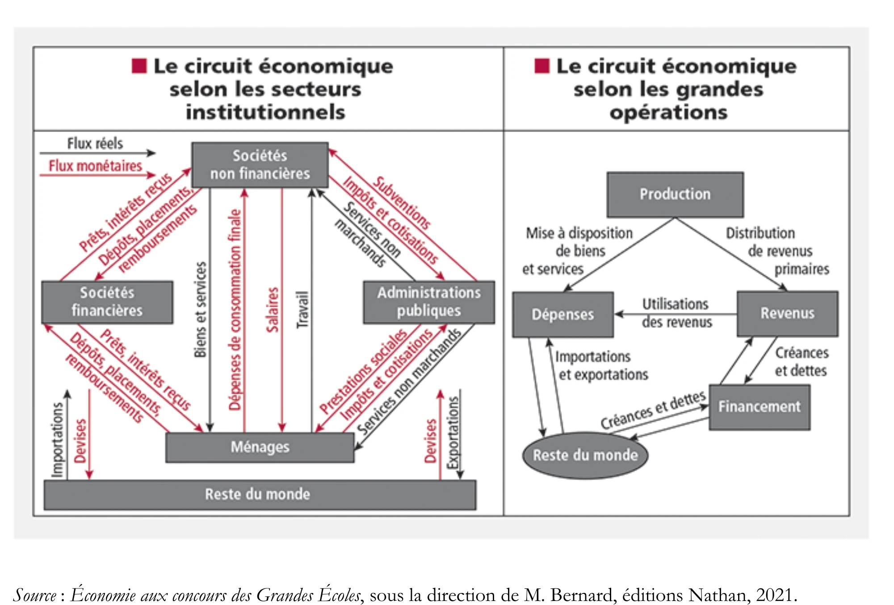
☞ Les différentes opérations sont regroupées dans des comptes. On distingue 6 comptes pour chaque secteur institutionnel : le compte de production, le compte d’exploitation, le compte d’affectation des revenus primaires, le compte de distribution secondaire des revenus, le compte d’utilisation des revenus, le compte de capital. Il faut ajouter un septième compte, le compte financier.
☞ Pour chaque compte, on calcule un solde, qui est la différence entre les ressources et les emplois qui s’inscrit en emplois si les ressources sont supérieures aux emplois et en ressources si les emplois sont supérieurs aux ressources (avec un équilibre compte de chaque compte comme expliqué précédemment). Ce solde est ensuite reporté dans le compte suivant.
✪ Exemple : Le revenu disponible brut, qui est le solde du compte de redistribution secondaire du revenu, vient en ressources du compte d’utilisation du revenu.
Comptabilité nationale · Enchaînement des comptes
Support · page 20 sur 35 · Voir la page originale
Texte et documents du support
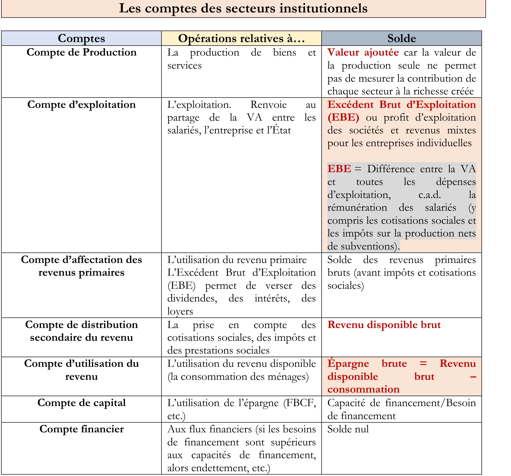
Ainsi, les soldes des comptes vont permettre d’apprécier la situation économique des secteurs institutionnels.
☞ La CN offre ainsi une vue globale et chiffrée de l’économie d’un territoire sur une période donnée, généralement une année. Elle synthétise à la fois des catégories d’agents (les secteurs institutionnels) et leurs opérations dans des tableaux économiques : le Tableau Entrées-Sorties (TES) pour les opérations de production, le Tableau Économique d’Ensemble pour les opérations de répartition des revenus et des dépenses et le Tableau des Opérations financières.
Production · Travail, capital et combinaison productive
Support · page 21 sur 35 · Voir la page originale
Texte et documents du support
Section II : Les grandes fonctions de l’économie
1. La production est au cœur du circuit économique
1.1. La production résulte d’une combinaison de facteurs de production
Ø Les différents facteurs de production
☞ Les facteurs de production sont les moyens mis en œuvre dans la combinaison productive. La théorie économique distingue habituellement deux facteurs principaux : le capital et le travail. Certains auteurs prennent en compte de manière spécifique les ressources naturelles.
☞ Le travail est une activité humaine conduisant à la production ou à l’entretien de biens et de services. A l’échelle microéconomique, il correspond au nombre de salariés ou d’heures travaillées. A l’échelle macroéconomique, il équivaut à la population active. J. Freyssinet a dressé une typologie des formes de travail.
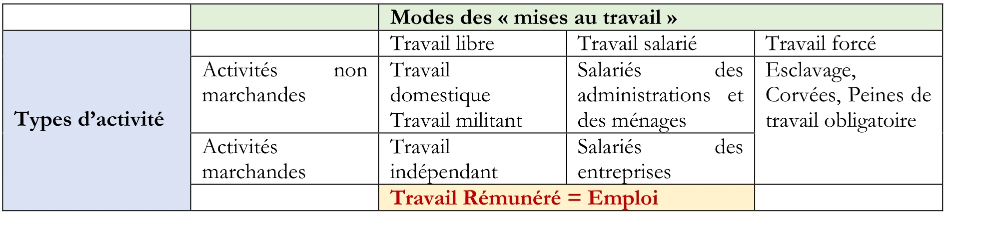
☞ Au sens de la CN, le capital est l’ensemble des moyens de production. On parlera de capital technique pour désigner les moyens matériels utilisés pour produire : machines, matières premières, etc. A la suite de Adam Smith, on distingue traditionnellement le capital fixe, formé par les biens durables utilisés dans la production et le capital circulant, qui comprend les biens intermédiaires utilisés au cours de la production.
☞ Certains économistes considèrent d’autres facteurs de production. Par exemple, certains considèrent le progrès technique comme un troisième facteur. D’autres considèrent l’information comme un autre facteur. Mais ces considérations ne font pas l’unanimité.
Ø La combinaison productive
☞ La combinaison productive est la combinaison des facteurs de production, capital et travail, que les agents économiques doivent associer dans des proportions données pour réaliser un certain volume de production. Le choix d’une combinaison productive est lié aux contraintes techniques (degré de substituabilité des facteurs et productivité marginale des facteurs) et économiques (prix relatifs des facteurs et prix du bien produit).
Pour établir une liaison quantitative et causale entre une production et les facteurs utilisés pour cette production, on utilise une fonction de production.
En microéconomie, la fonction de production indique le niveau maximal de production qui peut être obtenu par les différentes combinaisons de facteurs de production, la technologie étant donnée. La forme générale pour une firme quelconque est :
Y = f (X1, X2,…, Xj)
Production · Rendements factoriels, rendements d’échelle et valeur ajoutée
Support · page 22 sur 35 · Voir la page originale
Texte et documents du support
Dans cette expression, Y est la quantité de bien produite (output) par la firme considérée et (X1, …, Xj) sont les facteurs (inputs) utilisés par cette firme. En général, on écrit :
Y= f (K, L)
Les facteurs peuvent être considérés comme substituables ou complémentaires. On peut calculer divers ratios significatifs à partir de la fonction de production. Par exemple, l’intensité capitalistique (K/L) mesure la part relative du capital et du travail dans la combinaison productive. On dit qu’une combinaison productive est capitalistique lorsqu’elle utilise relativement plus de capital que de travail. L’intensité capitalistique est souvent considérée comme fixe en courte période mais variable en longue période.
Pour décrire l’évolution de la production lorsque l’on modifie la quantité de facteurs de production employée, on utilise la notion de rendement factoriel. Trois cas possibles pour les rendements factoriels (croissants, décroissants, constants) comme dans le cas des rendements d’échelle. Et sous l’hypothèse d’une fonction de production à un facteur variable parfaitement divisible et à un facteur fixe, il est possible de déterminer l’évolution de la production et de la productivité marginale du facteur variable. Celle-ci mesure la variation de la quantité produite pour une variation infiniment petite de la quantité de facteur. Or pour les néoclassiques, pour un état donné des techniques, la productivité marginale est décroissante.
ð Loi des rendements décroissants. Sous l’hypothèse d’une fonction de production à facteurs substituables, on met en évidence l’existence de rendements d’échelle.
✪ Il ne faut pas confondre les rendements d’échelle où l’on raisonne sur les deux facteurs variables avec les rendements marginaux (ou factoriels) où l’on raisonne sur un seul facteur variable, l’autre étant fixe. Trois cas peuvent être envisagés :
➣ Rendements d’échelle croissants lorsque la quantité produite croît plus vite que la quantité de facteurs mise en œuvre pour produire.
➣ Rendements d’échelle décroissants lorsque la quantité produite croît moins vite que la quantité de facteurs mise en œuvre pour produire.
➣ Rendements d’échelle constants lorsque la quantité produite croît au même rythme que la quantité de facteurs mise en œuvre pour produire. Les rendements d’échelle concernent la longue période alors que les rendements factoriels concernent la courte période.
1.2. De la mesure de la production par le PIB à l’équilibre emplois-ressources
☞ Pour produire, les entreprises doivent utiliser des consommations intermédiaires. Pour déterminer la valeur que chaque entreprise ajoute aux produits qu’elle a consommés dans le processus de production, on calcule la valeur ajoutée brute (VAB) :
Valeur ajoutée brute : Production – consommations intermédiaires
✪ La détermination des VA permet d’éviter des doubles comptes et elle mesure donc la richesse effectivement générée par l’activité économique d’un agent. En CN, la VA est mesurée au prix de base, comme la production. Elle est brute car on ne déduit par l’amortissement.
☞ Pour mesurer la production nationale, on utilise des agrégats. Un agrégat est une grandeur synthétique mesurant le résultat de l'activité économique.
☞ Le principal agrégat est le PIB. Le PIB est l’agrégat permettant de mesurer la valeur de la production pour une année donnée sur un territoire donné. Il est calculé en France par la CN sous
PIB · Valeur, volume et trois approches du calcul
Support · page 23 sur 35 · Voir la page originale
Texte et documents du support
la responsabilité de l’INSEE. Le PIB peut être évalué en valeur ou en volume. Le passage des valeurs au volume suppose d’éliminer les effets de l’inflation. Le PIB réel, et son taux de croissance, donne une idée plus précise des niveaux de vie des ménages. En 2025, le PIB est évalué aux prix du marché (prix auxquels les produits sont vendus) à 2991,1 milliards d’euros en France. Le taux de croissance du PIB en volume s’établit à + 0,8% en 2025.
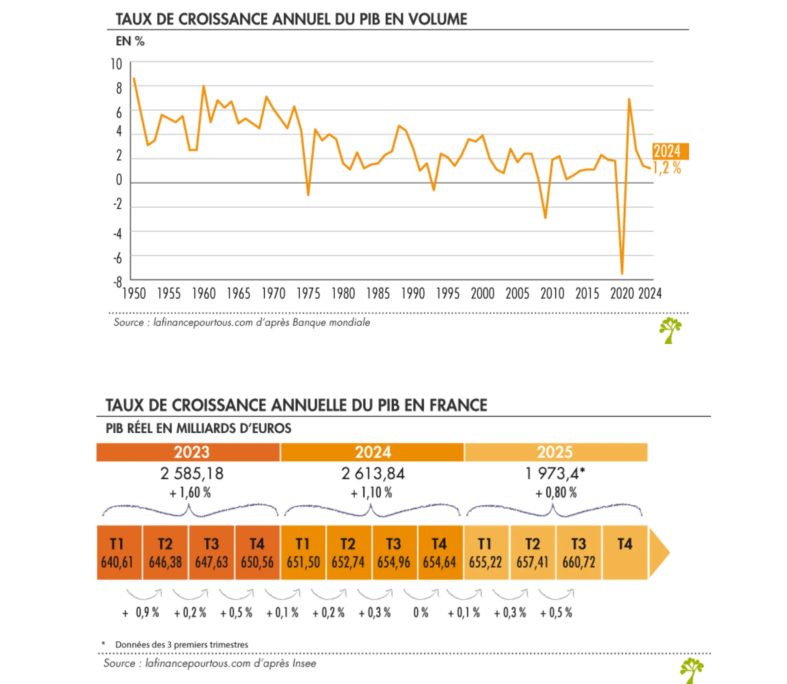
On peut calculer le PIB de trois façons différentes :
1/ Par l’approche de la production. Dans ce cas, le PIB est égal à la somme des valeurs ajoutées aux prix de base plus les impôts sur la production nets de subventions.
2/ Par l’approche de la demande. Dans ce cas, le PIB est égal à la consommation finale, plus la FBCF, plus les variations de stocks, plus les exportations de biens et services moins les importations.
3/ Par l’approche des revenus. Le PIB est ici égal à la somme des revenus distribués soit la rémunération des salariés, celles des entreprises, EBE et revenu mixte brut, plus les impôts sur la production et les importations nets des subventions.
☞ Ces calculs vont permettre alors d’effectuer des comparaisons internationales. On utilise en général la valeur du PIB par habitant qui se calcule en divisant la valeur du PIB par le nombre d’habitants du pays concerné afin de tenir compte des différences démographiques.
PIB · Comparaisons internationales, RNB et ressources
Support · page 24 sur 35 · Voir la page originale
Texte et documents du support
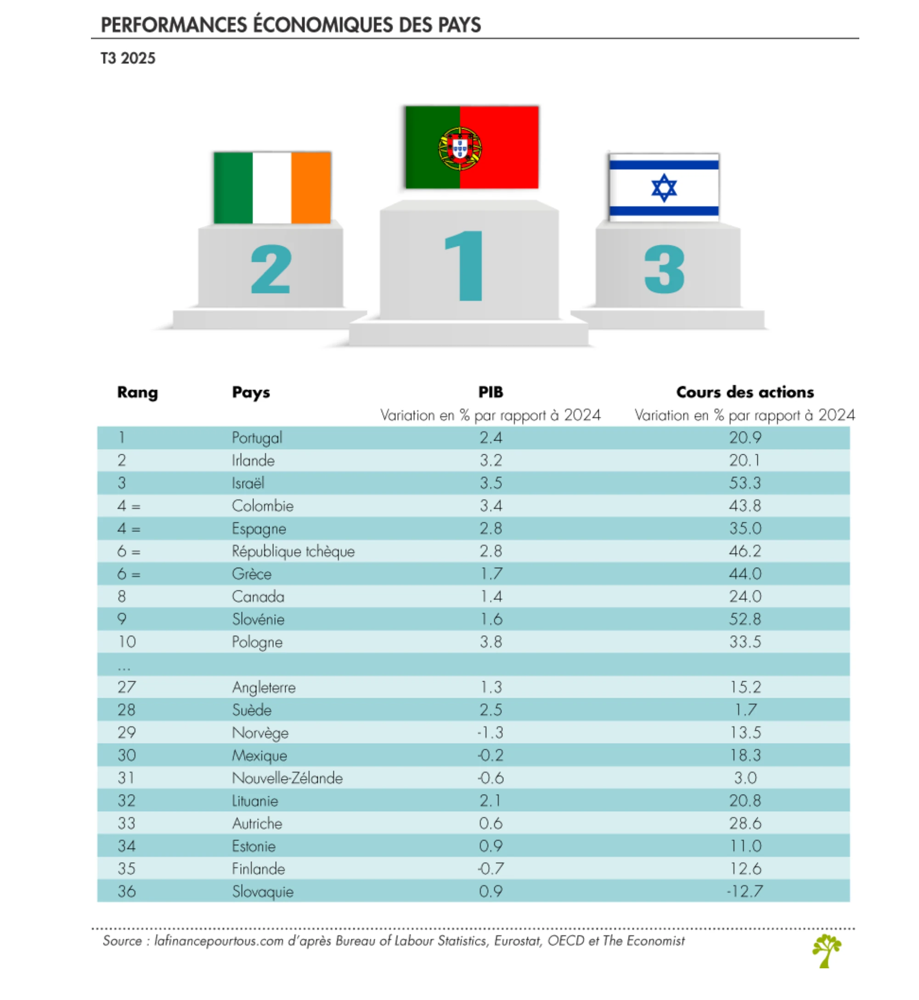
Différents agrégats viennent compléter le PIB, notamment le Revenu National Brut (RNB). Il se définit comme le PIB auquel :
➣ On ajoute les revenus primaires reçus du reste de monde.
➣ On retire les revenus versés au reste du monde. La différence entre PIB et RNB est peu importante dans les pays développés. En revanche, elle est très importante dans les PED du fait du rapatriement des dividendes par les filiales d’entreprises étrangères notamment.
☞ Ainsi, la production mesurée par le PIB, défini comme la somme des valeurs ajoutées, est une ressource pour la Nation. À cette ressource s’ajoutent les achats de biens et services au reste du monde (les importations). Le PIB et les importations sont donc les ressources de la Nation. Ces biens et services
Équilibre emplois-ressources et références sur le PIB
Support · page 25 sur 35 · Voir la page originale
Texte et documents du support
produits et importés sont achetés par les résidents et les non-résidents par le biais des exportations. Ce sont les emplois. Les ressources correspondent donc à l’offre de biens et services sur le territoire, les emplois à la demande.
☞ Il est alors possible de représenter de façon synthétique les ressources disponibles dans une économie et la façon dont elles sont utilisées. D’un côté, les ressources proviennent de la production domestique (PIB) et des importations (M). Les emplois peuvent être :
➣ La consommation finale des ménages C ;
➣ Les achats publics (G), qui correspondent à la consommation finale et aux investissements des administrations publiques ;
➣ Les investissements (I) ;
➣ Les exportations (X) ;
➣ Les variations des stocks (VS), qui est la différence entre les biens produits sur les périodes antérieures et commercialisés au cours de la période considérée et les biens produits durant la période considérée et qui seront commercialisés à une période ultérieure.
☞ A partir de là, on peut exprimer l’équilibre emplois-ressources :
PIB + M = C + G + I + X + VS
On peut encore rajouter les transferts de capitaux et les revenus de transfert.
✪ Intérêt du tableau ressources-emplois : Mettre en évidence la part respective de chacune de leurs composantes dans le total et de calculer pour chaque année le taux de croissance de ces composantes.
💡 Ressources documentaires :
➣ Voir la vidéo de l’INSEE : « Le PIB et la croissance en question ». https://www.dailymotion.com/video/x19pp0s
➣ Voir la vidéo Dessine-moi l’économie : « Qu’est-ce que le PIB ? ». https://dessinemoileco.com/quest-ce-que-le-produit-interieur-brut/
➣ Dossier de l’INSEE : « Pour comprendre la croissance économique ».
➣ Vidéo de l’éco à venir : « Aujourd’hui on vous parle du PIB ». https://lecoavenir.fr/2024/07/08/aujourdhui-on-vous-parle-du-pib/
➣ Vidéo de l’ENS ES Lyon : « Les limites du PIB et de la croissance comme indicateurs de richesse et de progrès ». https://ses.ens-lyon.fr/articles/les-limites-du-pib-et-de-la-croissance-comme-indicateurs-de-richesse-et- de-progres
➣ Interview de Claudia Senik, « Mesure du bien-être au-delà du PIB », Paris School of Economics, 2024. https://www.parisschoolofeconomics.eu/fr/actualites/interview-mesure-du-bien-etre-au-dela-du-pib- claudia-senik/
➣ Interview de Claudia Senik, « Mesure du bien-être au-delà du PIB », Paris School of Economics, 2024. https://www.parisschoolofeconomics.eu/fr/actualites/interview-mesure-du-bien-etre-au-dela-du-pib- claudia-senik/
➣ Tribune de Marc Fleurbaey, « Aller au-delà du PIB : pourquoi et comment ? », Paris School of Economics, 2024. https://www.parisschoolofeconomics.eu/fr/actualites/tribune-aller-au-dela-du-pib-pourquoi-et- comment-marc-fleurbaey/
➣ Interview de Antoine Bouët, « Pendant ce temps-là, l’économie française décroche-t-elle ? », Blog du CEPII, Juillet 2024 https://www.cepii.fr/BLOG/bi/post.asp?IDcommunique=1042
➣ Article du Blog de l’INSEE, « Regarder la croissance sous l’angle du PIB ressenti rebat les hiérarchies économiques internationales », Septembre 2023 https://blog.insee.fr/regarder-la-croissance-sous-l-angle-du-pib-ressenti/
Tableau entrées-sorties · Organisation et lecture
Support · page 26 sur 35 · Voir la page originale
Texte et documents du support
1.3. Le tableau entrées-sorties (TES) retrace en Comptabilité Nationale les opérations sur les produits
La CN publie plusieurs tableaux de synthèse dont le tableau économique d’ensemble (TEE) et le tableau entrées-sorties (TEE).
☞ Le TEE regroupe les comptes des secteurs institutionnels, à partir desquels on calcule les opérations et les soldes au niveau de la Nation. On pourra alors étudier en détail les comptes de chaque secteur institutionnel, les comptes de la Nation et l’enchaînement de tous les agrégats.
☞ Le tableau entrées-sorties (TES) retrace pour sa part les opérations sur les produits, c.a.d. celles qui concernent la création et l’utilisation des biens et services marchands et non marchands. Il rassemble ainsi les comptes de biens et de services par produits et les comptes de production et d’exploitation par branches. Les branches d’activité regroupent les unités de production qui produisent le même bien ou le même service.
Le TES est publié par l’INSEE pour 17 branches et se présente en « T » du fait de la juxtaposition de cinq tableaux en lignes et en colonnes.
La lecture du TES permet de retrouver l’équilibre emplois-ressources pour chaque produit et de mesurer la valeur ajoutée ainsi que l’excédent brut d’exploitation des branches. On va ainsi pouvoir obtenir une vision synthétique de l’économie nationale mettant en évidence l’interdépendance des branches et les relations entre l’économie nationale et le reste du monde.
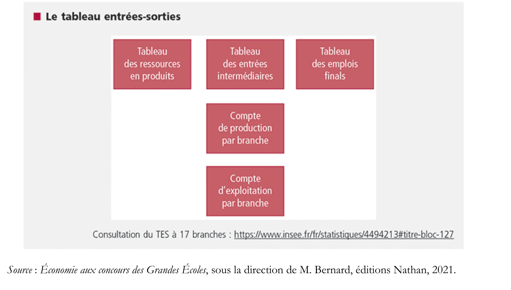
TES 2017 · Ressources, consommations intermédiaires et emplois finals
Support · page 27 sur 35 · Voir la page originale
Texte et documents du support
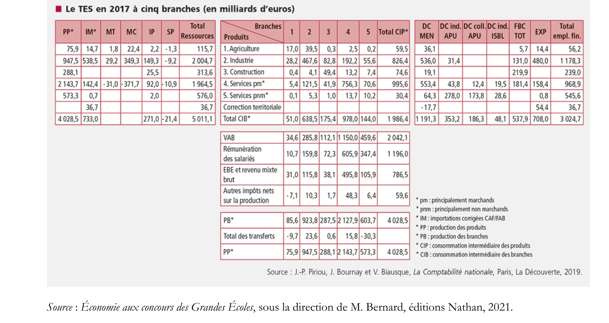
➣ Le tableau des ressources en produits : Les ressources en produits disponibles sur le territoire national proviennent soit de la production réalisée sur le territoire national (PP), soit des importations (IM). Ces ressources doivent être exprimées dans les mêmes « prix » que ceux des emplois pour retrouver l’équilibre comptable emplois-ressources. Si le prix de base est significatif pour le producteur des ressources, le prix significatif du côté des acheteurs est le prix d’acquisition. Ainsi, pour évaluer les ressources aux prix d’acquisition, il faut ajouter les marges de transport (MT) et la marge commerciale (MC) du commerçant (différence entre le prix de vente et le prix d’achat), les impôts sur les produits payés par les acheteurs (IP) et retrancher de la valeur des ressources les subventions sur les produits (SP) (elles sont comptées dans le prix de base mais ne figurent pas dans les prix d’acquisition des ressources).
➣ Le tableau des entrées intermédiaires (tableau central) : Il permet d’isoler les consommations intermédiaires et de comprendre ainsi les interdépendances entre chaque branche car il peut se lire en lignes et en colonnes. Il permet aussi de calculer les coefficients techniques.
➣ Le tableau du compte d’exploitation et de production par branche : Ce tableau fournit pour chaque branche la VA et sa répartition entre rémunération des salariés, rémunération du capital (EBE) et impôts sur la production.
➣ La lecture du TES en lignes permet de retrouver l’équilibre ressources-emplois des produits. Exemple : En 2017, 115,7 milliards d’euros de produits agricoles étaient disponibles en France, dont 14,7 milliards du fait des importations. 59,5 milliards de produits agricoles ont été utilisés par les différentes branches pour les besoins de leur production. L’industrie a par exemple consommé 39,5 milliards de produits agricoles en CI (par exemple pour la fabrication de denrées alimentaires). Les ménages ont également consommé 36,1 milliards de produits agricoles (CF) et 14,4 milliards ont été exportés.
➣ La lecture du TES en colonnes nous renseigne sur les branches.
Leontief · Coefficients techniques et premières limites du PIB
Support · page 28 sur 35 · Voir la page originale
Texte et documents du support
Par exemple, l’industrie a eu besoin de 638 milliards d’euros de CI pour réaliser sa production (de 923,8 milliards)., pour 467,6 milliards des biens industriels et pour 121,5 milliards des services principalement marchands.
La VAB de l’industrie s’élève à 285,8 milliards d’euros en 2017. Après avoir payé 10,3 milliards d’impôts sur la production nets de subventions, cette VAB a servi à rémunérer les salariés (159,8 milliards) et le capital et les revenus mixtes (115,8 milliards).
☞ Le TES, et en particulier le tableau des entrées intermédiaires, est un outil important pour les économistes. En effet, il offre tout d’abord un tableau de bord de l’activité économique et des interdépendances de branches. Il permet ensuite de simuler les effets de politiques menées pour stimuler une branche par exemple.
☞ C’est W. Leontief qui a mis au point les premiers TES dans les années 1930. Leontief a exprimé cette interdépendance des branches par la matrice des coefficients techniques.
☞ Coefficient technique de production : Les coefficients techniques de production mesurent la part relative des consommations intermédiaires issues d’une branche de l’économie dans la production totale d’une autre branche.
☞ Les coefficients techniques permettent de quantifier et d’analyser les interdépendances entre les différentes branches (par exemple, l’industrie agroalimentaire dépend de l’agriculture, mais aussi de l’énergie, des transports, etc.
Les coefficients techniques ne sont pas figés. Ils varient en fonction du PT, des rendements d’échelle, des changements dans la structure de la branche.
✪ Le TES met en évidence l’interdépendance des agents économiques puisque la production d’un bien ou d’un service nécessite la production d’autres biens et services. Exemple : Pendant la crise sanitaire, la baisse de la production d’une branche a eu des répercussions négatives sur les autres branches.
Si le TES est indispensable pour analyser la conjoncture économique, l’agrégat retenu pour mesurer la croissance, à savoir le PIB, peut présenter certaines limites.
1.4. Les limites du PIB, principal agrégat de la Comptabilité Nationale
Cet indicateur présente des limites comme indicateur de performance économique pour différentes raisons :
➣ Il ne tient pas compte de l’économie souterraine. Toutefois, les statisticiens s'efforcent de l'intégrer. Ils tiennent compte de la fraude et de l'évasion fiscale (à partir de données des contrôles fiscaux), du « travail au noir ». Remarque : les activités illégales ne sont pas évaluées en France car leur rôle est supposé marginal au niveau macroéconomique.
➣ Le PIB ne prend pas en compte la dépréciation du stock de capital liée aux activités productives. Les biens d’équipement achetés pour produire sont considérés comme des investissements car ils sont réutilisés pendant plusieurs années. Ces biens s’usent et deviennent obsolètes. Il en est de même pour la dépréciation du stock de capital naturel. En effet, si les organisations productives d’un pays mobilisent beaucoup de capital naturel, les capacités de production du pays ne seront pas durables. Ainsi, évaluer la performance économique d’un pays ne doit pas se limiter à la mesure de la performance actuelle mais aussi à sa capacité à maintenir dans le temps ce niveau de performance. On dit que le modèle économique doit être soutenable.
➣ Le PIB est aussi un indicateur imparfait du niveau de vie des habitants d’un pays. En effet, les revenus disponibles dans un pays ne se limitent pas aux revenus issus de la production domestique : une partie de ces revenus est versée à l’étranger et des flux de revenus entrent aussi dans le pays. De plus, la production domestique n’est pas prise en compte (autoconsommation). Or la production domestique correspondrait à
Au-delà du PIB · Bien-être, IDH et Stiglitz-Sen-Fitoussi
Support · page 29 sur 35 · Voir la page originale
Texte et documents du support
environ 50 % du PIB (faire le ménage est une activité prise en compte dans le P.I.B. quand elle est faite par une personne déclarée et rémunérée, mais pas quand on la fait pour soi). Enfin, les changements économiques et sociaux poussent à satisfaire ces besoins (repas, ménage, etc.) en faisant appel, plus souvent qu'autrefois, à des individus ou des sociétés rémunérés ce qui augmente la richesse créée, le PIB, de manière en réalité artificielle (cette activité productive existait auparavant mais n'était pas intégrée au PIB).
➣ Par ailleurs, le PIB ne tient pas du tout compte de la façon dont sont répartis les revenus issus de la production.
➣ Enfin, le PIB est un mauvais indicateur de bien-être. Le bien-être dépend du régime politique, de la qualité du système sanitaire, du niveau d’insécurité, etc. Or le PIB peut intégrer des activités nuisibles : production d'armes, de cigarettes, etc. De plus, il est lié à des nuisances : l'augmentation du PIB se traduit par plus de pollution, plus de prélèvements sur des ressources épuisables, etc. Toutefois, il faut comprendre que l'objectif du calcul du PIB n'est pas de mesurer le bonheur national : il a été conçu pour mesurer la production, donc la croissance économique, en vue notamment d'améliorer les politiques économiques. Les ambitions du calcul du PIB sont plus modestes que ce que l'on croit parfois. D'autres indicateurs ont été créés pour tenter de mesurer le niveau de développement comme l'IDH. « Le PIB n’est pas un BIB ».
☞ Dans ces conditions, le PIB est donc « une convention de richesse » (J. Gadrey) qui mesure imparfaitement le « beaucoup avoir » et assez mal le bien-être, c.a.d. la satisfaction. Easterlin (1974) a d’ailleurs mis en évidence que dès lors qu’un seuil de confort matériel est atteint, la satisfaction de vie stagne. Comment l’expliquer ? Tout d’abord, ceci s’explique car toute richesse est relative (au fil de la croissance, les aspirations sont relevées à la hausse). Ensuite, la richesse n’est pas tout (importance des conditions de travail, de la santé, de la famille, etc.).
☞ Dans cette perspective, le PNUD a proposé de nouveaux indicateurs de développement. Le plus connu est l’IDH. L’IDH est un indicateur composite de trois indicateurs : de santé (espérance de vie à la naissance), d’éducation (durée moyenne et attendue de scolarisation) et de niveau de vie (PIB/habitant en PPA). Mais il existe également d’autres indicateurs : l’indice de santé sociale, le PIB vert, l’indice de bien- être économique durable, etc.
☞ En 2008, la commission Stiglitz-Sen-Fitoussi, officiellement nommée « Commission sur la mesure es performances économiques et du progrès social » a fait des propositions pour échapper « à une approche trop quantitative, trop comptable de la mesure de nos performances collectives » et pour élaborer de nouveaux indicateurs de richesse. Elle a rendu son rapport en septembre 2009, rapport dans lequel elle fait des recommandations visant à dépasser le PIB pour retenir le bien-être dans une approche pluridimensionnelle, tant objective que subjective. Elle a aussi proposé d’évaluer la soutenabilité du bien- être, c.a.d. le fait qu’il puisse être soutenu dans le temps et transmis aux générations futures (Cf. développement durable).
La Commission a formulé un certain nombre de recommandations organisées en 3 grands axes :
➣ Tout d’abord, la nécessité de ne pas se limiter au PIB. Ce dernier est une mesure de la production et non du bien-être. La Commission a recommandé de se placer prioritairement du point de vue des ménages et de prendre en compte, à côté de la production, la mesure du revenu et du patrimoine. Elle a proposé aussi de mieux mesurer la répartition des revenus ainsi que la contribution des activités non marchandes à la formation du revenu.
➣ Ensuite, la mesure de la qualité de vie : elle a préconisé de mieux connaître les liens entre les divers aspects de la qualité de vie et de tenir compte de l’appréciation subjective de la qualité de la vie par les agents.
➣ Enfin, le développement durable et l’environnement : la Commission a préconisé la réalisation de travaux statistiques relatifs à l’évaluation de la soutenabilité. Elle souhaitait que l’on mesure les « stocks » qui conditionnent le bien-être (ressources naturelles, etc.). L’INSEE a engagé de nombreux travaux pour prendre en compte les recommandations de la Commission. EUROSTAT s’est engagée dans la même direction et l’OCDE a publié en mai 2011 un indicateur de bien-être interactif (Better life Index) que chacun peut modifier sur le site internet.
Revenus · Hicks, revenus du travail et de la propriété
Support · page 30 sur 35 · Voir la page originale
Texte et documents du support
En France, un Rapport sur les « Nouveaux indicateurs de richesse » a été publié le 27 août 2015 par les services du Premier Ministre. Ils concernent trois thèmes principaux : Économique (travail, investissement, stabilité financière), social (santé, qualité de vie, inégalités, éducation), environnemental (climat, biodiversité, ressources naturelles).
☞ Depuis 2012, l’ONU sort son « World Happiness Report ». Il permet de mesurer le bien-être des individus pays par pays. Les facteurs retenus sont : critères économiques ou médicaux (PIB/tête, espérance de vie en bonne santé), critères sociétaux (générosité de la société, absence de corruption), ou des critères beaucoup plus subjectifs (avoir quelqu’un sur qui compter, etc.). En 2025, le classement est le suivant : Finlande (1er), Danemark (2ème), Islande (3ème). La France est 33ème.
2. La répartition des revenus
☞ La répartition des revenus est l’ensemble des opérations qui concourent à la distribution du revenu national entre les agents économiques. L’analyse économique distingue la répartition primaire, qui correspond à la rémunération des agents économiques ayant participé à la production, de la répartition secondaire (= la redistribution), qui vise à modifier la première par exemple, pour réduire les inégalités de revenus.
Selon la définition de J. Hicks, un revenu est le gain (monétaire ou en nature) dont on peut disposer sans réduire son patrimoine. Il s’agit d’un flux. Il est donc observable sur une période entre deux dates.
2.1. La valeur ajoutée est à l’origine d’une répartition primaire des revenus
☞ Dans l’approche du PIB par les revenus, la valeur ajoutée permet de rémunérer les agents ayant participé au processus productif en apportant leur travail, leur capital ou les deux (revenus mixtes). La répartition primaire résulte ainsi de la participation des agents à la production.
Revenu primaire = somme des revenus des facteurs
☞ Les revenus de facteurs rémunèrent la participation des facteurs de production, travail et capital, à l’activité productive. Les différents revenus de facteurs :
➣ Les revenus du travail sont constitués principalement des revenus perçus par les salariés. Ce sont par exemple les salaires ou les traitements. Ils représentent environ les ¾ du revenu primaire. Les salaires au sens strict résultent d’un contrat de travail entre un salarié et une entreprise. Ils peuvent être fixés à la tâche (proportionnel au rendement du travailleur), mais ils sont le plus souvent fixés au temps (généralement au mois). Au salaire de base s’ajoute un nombre variable d’éléments complémentaires de rémunération : heures supplémentaires, indemnités de transport, 13ème mois, etc. Le salaire net perçu par le salarié doit être distingué du coût salarial qui comprend les cotisations sociales, salariales et patronales ainsi que les impôts assis sur les salaires (taxe d’apprentissage par exemple). On distingue généralement les salaires (concernent les salariés du secteur privé) des traitements (rémunération des agents de l’État).
➣ Les revenus du capital qui correspondent au profit sont aussi appelés revenus de la propriété. Ils sont de différentes sortes :
- L’intérêt (revenu fixe) rémunère les prêts de capital financier. Exemple : dépôts sur un livret d’épargne, obligation, bons du Trésor. - Le dividende (revenu variable) rémunère les actions ou parts du capital d’une entreprise. Il varie avec les résultats de l’entreprise. - Le loyer rémunère la propriété foncière ou immobilière.
Répartition · Revenus mixtes, EBE et partage de la valeur ajoutée
Support · page 31 sur 35 · Voir la page originale
Texte et documents du support
- Plus-value : gains en capital, c.a.d. la différence entre le prix d’acquisition d’un bien et son prix de revente. Les revenus de la propriété tendent à se concentrer chez les titulaires de hauts revenus.
➣ Les revenus mixtes, dans le cas des entreprises individuelles, rémunèrent de façon indifférenciée le travail et le capital. On les nomme parfois revenus du travail non salarié. Les revenus mixtes rémunèrent donc l’activité des entrepreneurs individuels, ils correspondent au solde du compte d’exploitation des entreprises individuelles. Ces revenus représentent environ 20% du revenu primaire brut des ménages en France.
✪ Le profit est un concept théorique utilisé par les économistes. Il est équivalent à la notion comptable d’excédent brut d’exploitation (EBE). Pour rappel, l’EBE est un solde qui correspond à la valeur ajoutée moins la masse salariale. Cette masse salariale dépende du niveau des salaires et des effectifs salariés, ainsi que des cotisations sociales. L’EBE peut avoir plusieurs utilisations possibles (versement des dividendes, autofinancement des investissements, etc.). Cette affectation de l’EBE se modifie dans le temps. À partir du milieu des années 1980, la charge de l’endettement a considérablement diminué alors que la part des dividendes a progressé (Cf. capitalisme actionnarial). Depuis, les dividendes représentent près du tiers des bénéfices.
2.2. L’évolution du partage de la valeur ajoutée
☞ Le partage de la valeur ajoutée est un indicateur souvent retenu. On le calcule, à partir du compte d’exploitation, la part des salaires dans la valeur ajoutée et la part de l’excédent brut d’exploitation dans la valeur ajoutée (taux de marge). Le taux de marge est considéré comme un indicateur de profit. Si l’on regarde au niveau macroéconomique dans une perspective de long terme, l’évolution du partage de la VA en France est plutôt stable, même s’il peut exister des déformations lorsque survient un choc : 2/3 de la VA pour la part de la rémunération du travail et 1/3 de la VA pour la part de la rémunération du capital.
☞ En 2025 selon l’INSEE, en France, la rémunération du travail (des salariés) représente environ 65% et celle du capital (l’excédent brut d’exploitation qui correspond à la part reversée au capital affiche un taux de marge stable entre 31,5 et 31,8%) environ 32%. Le solde est complété par les impôts sur la production, net des subventions. On constate que la part des salaires dans la valeur ajoutée a augmenté entre la fin des années 1950 et le début des années 1980. Elle diminue ensuite pour retrouver à la fin des années 1990 son niveau du début des années 1960. Le taux de marge a connu une évolution symétrique. Ces variations s’expliquent par le fait que, durant les 30 Glorieuses, les salariés ont obtenu des gains de pouvoir d’achat grâce à une institutionnalisation croissante du rapport salarial (Cf. salarisation de la population active). Avec la crise, le rapport de force devient plus favorable aux entreprises qui améliorent leur taux de marge.
☞ À noter que pour les héritiers de Keynes, le secret de la croissance équilibrée réside dans un judicieux partage social de la VA : si les salaires et les profits croissent au même rythme de la VA, alors l’offre et la demande se suivent.
☞ Dans les années 1970, le taux de marge a baissé, les théoriciens du déséquilibre (Malinvaud, Bénassy) parlent de chômage classique : faute de rentabilité, les firmes sont découragées.
Dans les années 1980-1990, il s’envole. La désinflation compétitive repose sur la compression des salaires et de l’emploi (licenciements, flexibilité). On parle alors de chômage keynésien car la rentabilité se redresse mais les débouchés se tarissent. En effet, la consommation dépend des salaires. Cela explique l’essor des revenus du capital.
✪ La France se distingue par l’instabilité et le niveau actuel très bas de la part des salaires, ainsi qu’un partage de la masse salariale favorable au salaire et défavorable à l’emploi. Cela revient à choisir les salaires des « insiders » au détriment de l’emploi des « outsiders ».
Redistribution · Prélèvements, prestations et revenu disponible
Support · page 32 sur 35 · Voir la page originale
Texte et documents du support
✪ Distinction entre le taux de salaire (prix. Ex : à l’heure) et le salaire (revenu, c.a.d. prix du travail x temps de travail).
2.3. La redistribution modifie la répartition primaire des revenus
☞ Les revenus primaires ne sont pas les seuls revenus perçus. L’État Providence assure des fonctions tutélaires dont la fonction de redistribution. La répartition des revenus primaires est fortement inégalitaire. Au nom de la solidarité collective, la redistribution modifie donc la répartition, en raison de l’insuffisance ou de l’inexistence de revenus primaires pour certains ménages. Il faut donc calculer le revenu disponible.
☞ L’État va prélever des impôts et des cotisations sociales sur les agents et verser des revenus sociaux ou de transfert sous forme de prestations sociales.
☞ Les prélèvements obligatoires sont l’ensemble des versements exigés des agents économiques sans contrepartie directe et qui sont versés aux administrations publiques. Ils comprennent :
➣ Les impôts perçus par l’État, y compris ceux reversés à l’Union Européenne.
➣ Les impôts perçus par les collectivités locales.
➣ Les cotisations sociales payées par les salariés et les employeurs.
☞ Les prestations sociales sont des allocations (revenu en espèces) ou des fournitures (revenu en nature) versées à un assuré social ou à un ayant droit conformément à la réglementation (allocations chômage, allocations familiales, etc.). Certaines prestations sont contributives, i.e. que leur versement et/ou leur montant sont liés au paiement préalable de cotisations. D’autres sont non contributives. Cf. « aides sociales ». Les prestations relèvent de 4 domaines : santé, vieillesse, famille et chômage.
☞ La redistribution des revenus permet de lutter contre les inégalités des revenus primaires. Elle obéit à une double logique d’assurance et d’assistance. La logique d’assurance consiste à protéger la population contre les risques de la vie et à lui verser des ressources en cas de maladie, chômage, etc. C’est la redistribution horizontale. La logique d’assistance est d’aider les plus démunis afin de réduire les inégalités de revenus. C’est la redistribution verticale.
☞ Au final, le revenu disponible est le revenu dont disposent les ménages pour consommer et épargner.
✪ Pour rappel :
Revenu disponible = Prestations – Prélèvements Revenu disponible = (Revenus primaires + revenus de transfert) – (cotisations sociales + impôts
directs + CSG)
Cette notion n’a de sens qu’au niveau des ménages.
3. La consommation est l’emploi final le plus stable
3.1. Les différentes composantes de la consommation
☞ La consommation est l’utilisation d’un bien ou d’un service qui entraîne à plus ou moins long terme sa destruction.
Consommation · Histoire, déterminants sociaux et loi d’Engel
Support · page 33 sur 35 · Voir la page originale
Texte et documents du support
☞ Pour J.B. Say, « consommer, c’est détruire l’utilité qui est dans un produit, et par là lui ôter la valeur que cette utilité lui donnait ». L’INSEE peut ainsi distinguer tout d’abord les biens, produits matériels, selon leur rythme de disparition : non durables (alimentation), semi-durables (habillement), durables (automobile). Ensuite, les services sont des produits immatériels dont la consommation est souvent concomitante de sa production : un service de transport est consommé en même temps qu’il est produit, il en est de même pour le cours d’un enseignant.
☞ L’INSEE mesure la consommation des ménages par la consommation effective qui comprend les dépenses de consommation (les consommations payées par les ménages) et la consommation individualisable des administrations (biens et services produits par les administrations).
Consommation effective des ménages = Dépenses de consommation + Consommation
individualisable des administrations
✪ Toutes les dépenses des ménages ne sont pas de la consommation. Par exemple, les achats de biens immobiliers entrent dans la catégorie des biens d’investissement.
3.2. L’évolution des dépenses/comportements de consommation
☞ À long terme, l’évolution de la consommation révèle les mutations de notre société. Depuis le XIXe siècle, la consommation a fortement augmenté et sa structure s’est modifiée. La consommation élargit en effet l’accès aux biens et aux services. Pour rappel, au XVIIIe siècle, l’essentiel de la consommation populaire est constitué de pain noir. En 1750, le salaire moyen permet d’en acheter 1,5 livre par jour. Au XIXe siècle, les progrès agricoles permettent à la consommation de se diversifier. Le pain blanc devient plus courant. La consommation va pouvoir augmenter (la viande apparaît… en 1875, un kg de viande représente 9h30 de travail de manœuvre !). Ainsi, au milieu du XIXe siècle, la seule nourriture représentait 60% du budget des ouvriers au milieu du XIXe siècle selon F. Le Play. Au début du XXe siècle, la nourriture est encore majoritaire mais le logement et l’habillement prennent de plus en plus d’importance et aux EU, les premiers biens durables apparaissent (triomphe du taylorisme et du fordisme aux EU qui permettent la mise en place d’une production de masse). Après 1950, le non alimentaire dépasse 50% du budget. Les biens durables tirent la croissance. C’est l’avènement de la consommation de masse. On parle aussi de société de consommation (J. Baudrillard, La société de consommation, 1970). On constate alors que la consommation est une communication de signes, un moyen de différenciation symbolique au service de la construction des identités. Derrière l’uniformisation de la consommation de masse sont à l’œuvre des stratégies de différenciation (Cf. Analyses de Bourdieu, de Veblen avec la consommation ostentatoire).
☞ De 1960 à 2021, la consommation des ménages a été multipliée par plus de quatre en volume et sa structure, mesurée par les coefficients budgétaires (part de la consommation de biens et de services classés selon leurs fonctions dans la consommation effective) s’est profondément transformée. Conformément aux analyses de E. Engel (1857), on assiste à une baisse des coefficients budgétaires de l’alimentation, de l’habillement et de l’équipement du logement au profit du logement, des transports et communications, des loisirs et de la culture. Le logement est aujourd’hui le premier poste de la consommation des ménages. Les achats de services représentent environ 60% de la consommation effective. Parmi ces services, il faut souligner la part croissante des services non marchands (25%), qui reflète une demande accrue de santé et d’éducation. Les mutations de la consommation depuis 50 ans sont le résultat de la croissance du pouvoir d’achat et le signe d’un progrès des conditions de vie. Elles traduisent aussi la tertiarisation croissante de la production.
La consommation des ménages est donc un élément déterminant du dynamisme de l’économie dans une perspective de court terme.
Les ménages peuvent aussi épargner.
Épargne et investissement · Formes, évolution et déterminants
Support · page 34 sur 35 · Voir la page originale
Texte et documents du support
☞ L’épargne des ménages renvoie à la part du revenu disponible des ménages qui n’est pas utilisée en dépense de consommation finale.
☞ Nous pouvons constater que le taux d’épargne des ménages a augmenté de façon tendancielle entre 1950 et 1975 (il est passé de 16,9% à 22,3%). À partir de cette date, il a diminué très fortement pour atteindre son plus bas niveau en 1987 (11,1%). Le taux d’épargne a ensuite connu une remontée et oscille depuis 1995 autour de 15%. En 2025, le taux d’épargne s’établit à 17,9% du RDB. En comparaison avec d’autres pays développés, la France a un taux d’épargne relativement important.
☞ L’épargne peut être gardée sous forme liquide (la thésaurisation). Elle peut aussi être placée (actions, achats immobiliers, etc.). On distingue généralement l’épargne financière et l’épargne non financière. L’assurance-vie est un des produits d’épargne favoris des Français.
✪ Les ménages ne sont pas les seuls à épargner. Les entreprises et les administrations publiques épargnent aussi. L’épargne des ménages constitue toutefois l’essentiel de l’épargne nationale.
4. L’investissement est l’emploi final le plus volatil
Ø Définition
☞ L’opération d’accumulation du capital est l’investissement. Le terme investissement concerne le plus souvent le capital fixe : investir, c’est créer ou acquérir des biens de production ou d’équipement. En un sens plus large, investir, c’est, pour une entreprise ou un pays, augmenter le stock des moyens de production (machines, équipement de tous types) et développer les infrastructures, l’acquisition de connaissances et la formation des hommes.
☞ La CN définit un agrégat, la formation brute de capital fixe (FBCF), qui permet de quantifier l’effort d’investissement des différents secteurs institutionnels. La FBCF inclut désormais une fraction des investissements immatériels : les logiciels par exemple.
✪ L’investissement est un flux alors que le capital est un stock.
☞ La FBCF représente 22,2% du PIB en 2025 (= taux d’investissement de la Nation). L’investissement est particulièrement sensible à la conjoncture, c.a.d. qu’il diminue plus fortement que la croissance lors des phases de récession et réagit plus fortement à la hausse lors des périodes d’expansion.
Ø Les déterminants de l’investissement
1/ L’investissement dépend tout d’abord de la demande globale. En effet, l’investissement permet d’accroître les capacités de production et si la demande globale est en hausse, il faut acquérir de nouveaux biens d’équipement afin de pouvoir produire plus pour satisfaire ce surcroît de demande. Cette hausse de l’investissement se traduit par une augmentation de la demande globale car l’investissement équivaut à une demande de biens d’équipement.
Un cercle vertueux se met alors en place : augmentation de l’I => augmentation des revenus générés => augmentation de la demande=> augmentation de l’I pour répondre à la demande=> etc…
On parle alors de l’existence d’un multiplicateur d’investissement : un accroissement initial de l’investissement se traduit au final par une augmentation plus que proportionnelle de la production. Le niveau de l’investissement influence donc le niveau de l’activité économique.
2/ L’investissement dépend aussi des profits anticipés.
Investissement, échanges extérieurs et interdépendance des fonctions
Support · page 35 sur 35 · Voir la page originale
Texte et documents du support
3/ Enfin, l’investissement dépend aussi du coût relatif des facteurs de production. En fonction du coût respectif de chacun des facteurs, les entreprises vont adopter la combinaison productive la moins coûteuse possible compte tenu du volume de production qu’elles veulent réaliser.
Ø Investissement et innovation
L’investissement accroit non seulement le stock de capital, mais il en modifie aussi la composition en introduisant de nouvelles technologies dans le processus de production. L’investissement peut donc influencer la croissance d’un pays sur le long terme. Cf. Dépenses en RD.
5. Les échanges extérieurs
☞ Les opérations économiques réalisées avec des unités institutionnelles non résidentes sont enregistrées dans la balance des paiements, qui est un document comptable offrant une image synthétique des flux d’actifs réels, monétaires et financiers entre résidents et non-résidents. Les exportations et les importations apparaissent dans l’équilibre emplois-ressources.
☞ Le solde du commerce extérieur est la différence entre la valeur des exportations et celle des importations. Lorsque les exportations sont inférieures aux importations (solde commercial négatif), cela signifie que l’offre domestique est inférieure à la demande domestique. Cela signifie aussi que l’investissement est supérieur à l’épargne : la nation est donc en besoin de financement.
☞ En 2025, le déficit commercial de la France s’établit à 69,2 Md€. À titre de comparaison, le déficit commercial des EU est de 1241 milliards de dollars en 2025. Pour sa part, l’excédent commercial de l’Allemagne a atteint 200,4 milliards d’euros en 2025. L’excédent commercial de la Chine en 2025 est de 1200 milliards de dollars.
Conclusion : Par leurs opérations, les acteurs sont interdépendants
Les différentes activités économiques étudiées créent des relations d’interdépendance entre les ménages, les entreprises, les banques et l’État. Rien ne circule qui n’ait été produit. Il faut produire avant de distribuer et de redistribuer des salaires et des revenus. Par exemple, les entreprises versent des revenus d’activité aux ménages qui ont contribué à cette production. Sur ces revenus d’activité, les ménages (comme les entreprises) versent des impôts et des cotisations sociales aux pouvoirs publics et reçoivent des prestations sociales, principalement des organismes de Sécurité Sociale. Ils affectent ensuite leur revenu disponible à la consommation et à l’épargne. Les impôts et les cotisations sociales permettent aux pouvoirs publics de financer les investissements nécessaires à la croissance économique, les services publics (écoles, hôpitaux, etc.) et de redistribuer des revenus. Ces relations entre les agents économiques sont donc étroitement dépendantes les unes des autres.